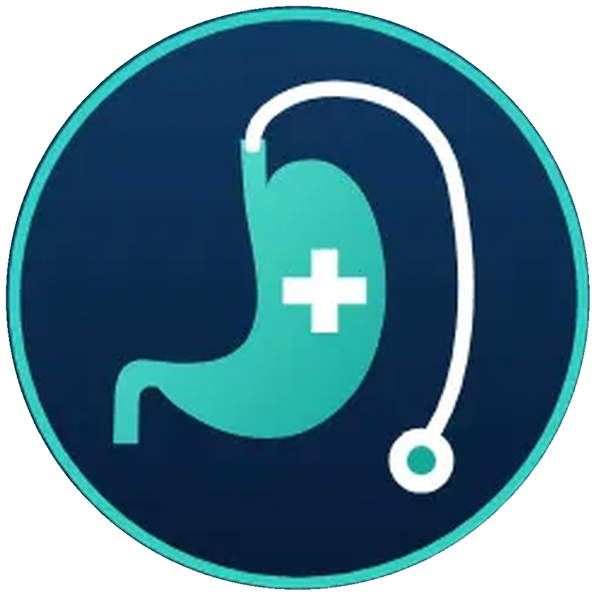

<!doctype html>
<html lang="ar" dir="rtl">
<head>
<meta charset="utf-8">
<title>Summer Heat Reel</title>
<script type="importmap">{"imports":{"three":"./lib/three.module.js","three/addons/":"./lib/jsm/"}}</script>
<link rel="stylesheet" href="identity.css">
<style>
#bg2d{position:absolute;inset:0;background:var(--ivory)}
#gl{position:absolute;left:0;top:0;width:1080px;height:1920px;direction:ltr}
#ov,#chrome,#tr{position:absolute;inset:0}
#capwrap{position:absolute;inset:0}
#grain{position:absolute;inset:0;pointer-events:none;mix-blend-mode:multiply;background-image:url("data:image/svg+xml;utf8,<svg xmlns='http://www.w3.org/2000/svg' width='260' height='260'><filter id='n'><feTurbulence type='fractalNoise' baseFrequency='.85' numOctaves='2' stitchTiles='stitch'/><feColorMatrix values='0 0 0 0 .45  0 0 0 0 .38  0 0 0 0 .3  0 0 0 .55 0'/></filter><rect width='100%' height='100%' filter='url(%23n)'/></svg>")}
.namelock{left:162px;top:93px;direction:rtl;text-align:left;white-space:nowrap;text-shadow:0 0 8px rgba(252,250,246,.92),0 0 16px rgba(252,250,246,.7)}
.namelock .nm{font-family:Alexandria;font-weight:700;font-size:30px;line-height:1.25;color:var(--ink)}
.namelock .sp{font-family:Plex;font-weight:600;font-size:20px;line-height:1.3;color:var(--coral)}
.namelock.light{text-shadow:none}.namelock.light .nm{color:#FCFAF6}.namelock.light .sp{color:#FFE1D4}
.big{font-family:Alexandria;font-weight:900;color:var(--ink);line-height:1.08;direction:rtl}
.w{display:inline-block}
svg text{font-family:Plex}
</style>
</head>
<body>
<div id="bg2d"></div>
<div id="gl"></div>
<div id="ov"></div>
<div id="capwrap"></div>
<div id="tr"></div>
<div id="chrome"></div>
<div id="grain"></div>
<script type="module">
import { THREE, renderFrame, canvas, DEFAULT_FX, project, V, W, H, clamp, lerp, ease, eOut } from './core.js';
import * as WM from './scene_watermelon.js';
import * as SK from './scene_skin.js';
import * as BD from './scene_body.js';
import * as BR from './scene_barrier.js';
import * as MB from './scene_microbiome.js';
import * as ST from './scene_stomach.js';
import * as TB from './scene_table.js';
import * as RF from './scene_reflux.js';
document.getElementById('gl').appendChild(canvas);
await BD.ready;
const $ = id => document.getElementById(id);
const spring = (u, k = 9, z = .55) => { if (u <= 0) return 0; const d = z * k, wd = k * Math.sqrt(1 - z * z); return 1 - Math.exp(-d * u) * (Math.cos(wd * u) + d / wd * Math.sin(wd * u)); };
const env = (t, a, b, i = .35, o = .35) => Math.min(eOut((t - a) / i), eOut((b - t) / o));
const fin = (t, a, d = .45) => eOut((t - a) / d);                       // fade-in progress
const AR = n => String(n).replace(/[0-9]/g, d => '٠١٢٣٤٥٦٧٨٩'[d]);

// ---------------- narration timing (captions.json = aligned to the voiceover, or the estimate) ----------------
const CAPS = await fetch('data/captions.json').then(r => r.json());
const norm = s => s.replace(/[ً-ْٰـ]/g, '').replace(/[أإآ]/g, 'ا').replace(/ة/g, 'ه').replace(/ى/g, 'ي').replace(/[^؀-ۿA-Za-z0-9]/g, '');
const C = i => CAPS[i].start, CE = i => CAPS[i].end;
const Wd = (i, p) => { const n = norm(p); const w = CAPS[i].words.find(x => norm(x.w).startsWith(n)); if (!w) console.error('anchor not found', i, p); return w ? w.s : CAPS[i].start; };
for (const c of CAPS) for (const w of c.words) { const b = norm(w.w); w.cls = (c.hl || []).some(h => b.includes(norm(h))) ? 'c' : (c.hl2 || []).some(h => b.includes(norm(h))) ? 'h' : ''; }
const VO_END = CAPS[CAPS.length - 1].end;
const SH = [
  { n: 'melon', s: 0, tr: 'none', k: 'hook', cap: 'hide' },
  { n: 'complaints', s: C(1) - .1, tr: 'none', k: 'hook', cap: 'hide' },
  { n: 'quote', s: C(3) - .15, tr: 'flare', k: 'hook', cap: 1560 },
  { n: 'enter', s: C(6) - .15, tr: 'fade', k: 'enter', cap: 1560 },
  { n: 'thermo', s: C(8) - .15, tr: 'haze', k: 's1', cap: 1756 },
  { n: 'bloodviz', s: C(11) - .15, tr: 'wipe', k: 's1', cap: 1560 },
  { n: 'vascular', s: C(13) - .15, tr: 'fade', k: 's1', cap: 1560 },
  { n: 'barrier', s: C(17) - .15, tr: 'fade', k: 's2', cap: 1756 },
  { n: 'context', s: C(22) - .15, tr: 'cut', k: 's2', cap: 1560 },
  { n: 'microbiome', s: C(24) - .15, tr: 'fade', k: 's3', cap: 1560 },
  { n: 'habits', s: C(28) - .15, tr: 'flare', k: 's3', cap: 1560 },
  { n: 'water', s: C(33) - .15, tr: 'cut', k: 's4', cap: 1560 },
  { n: 'reflux', s: C(35) - .15, tr: 'wipe', k: 's4', cap: 1560 },
  { n: 'food', s: C(39) - .15, tr: 'flare', k: 's5', cap: 1560 },
  { n: 'listen', s: C(46) - .15, tr: 'fade', k: 's6', cap: 'hide' },
  { n: 'warnings', s: C(49) - .15, tr: 'none', k: 's6', cap: 'hide' },
  { n: 'emergency', s: C(53) - .15, tr: 'cut', k: 's6', cap: 1560 },
  { n: 'slogan', s: C(56) - .15, tr: 'fade', k: '', cap: 'hide' },
  { n: 'endcard', s: VO_END + .7, tr: 'fade', k: '', cap: 'hide' },
];
export const TOTAL = VO_END + .7 + 4.3;
window.DURATION = TOTAL;
const KICK = { hook: ['◐', 'صيف × جهازك الهضمي'], enter: ['◐', 'الإجهاد الحراري'], s1: ['١', 'الدم بيروح للجلد'], s2: ['٢', 'جدار الأمعاء'], s3: ['٣', 'البكتيريا والانتفاخ'], s4: ['٤', 'المية والحموضة'], s5: ['٥', 'الأكل في الحر'], s6: ['◉', 'اسمع لجسمك'] };

// ---------------- overlay helpers ----------------
function label(tx, ty, px, py, html, cls = '', align = 'right', pill = true, a = 1) {
  if (a <= .01) return '';
  const side = align === 'right' ? `right:${W - tx}px` : `left:${tx}px`;
  return `<div class="abs lbl ${cls}${pill ? ' pill' : ''}" data-px="${px}" data-py="${py}" data-c="${cls}" style="${side};top:${ty - 22}px;text-align:${align};opacity:${a}">${html}</div>`;
}
function drawLeaders() {
  let svg = '';
  for (const el of $('ov').querySelectorAll('.lbl[data-px]')) {
    const r = el.getBoundingClientRect(), px = +el.dataset.px, py = +el.dataset.py, c = el.dataset.c, op = +(el.style.opacity || 1);
    const col = c === 'hot' ? '#D9583B' : c === 'cool' ? '#4E8C88' : '#1F3A5F';
    const sx = px < r.left ? r.left - 6 : px > r.right ? r.right + 6 : (r.left + r.right) / 2;
    const sy = py < r.top ? r.top - 4 : py > r.bottom ? r.bottom + 4 : (r.top + r.bottom) / 2;
    svg += `<g opacity="${op}"><line x1="${sx}" y1="${sy}" x2="${px}" y2="${py}" stroke="${col}" stroke-width="2"/><circle cx="${px}" cy="${py}" r="7" fill="${col}" stroke="#FCFAF6" stroke-width="3"/></g>`;
  }
  if (svg) $('ov').insertAdjacentHTML('beforeend', `<svg class="leaders" width="1080" height="1920">${svg}</svg>`);
}
const chip = (txt, col, a = 1, extra = '') => a > .01 ? `<span class="chip" style="color:${col};background:rgba(252,250,246,.88);opacity:${a};transform:translateY(${(1 - a) * 14}px);display:inline-block;${extra}">${txt}</span>` : '';
const reveal = (a, dy = 26) => `opacity:${a};transform:translateY(${(1 - a) * dy}px)`;

// ---------------- shots ----------------
const R = {};
R.melon = (t, lt) => {
  WM.update(lt + .6); renderFrame([{ scene: WM.scene, camera: WM.camera }], { ...DEFAULT_FX, ...WM.fx(lt), uTime: t });
  const a1 = fin(t, .15, .55), a2 = fin(t, Wd(0, 'من') - .05, .55);
  return `<div class="abs" style="left:0;right:0;bottom:0;height:860px;background:linear-gradient(to top, rgba(46,26,14,.74), rgba(46,26,14,0))"></div>
    <div class="abs headline" style="right:72px;top:1352px;color:#FCFAF6;font-size:124px;${reveal(a1)}">القصة أكبر</div>
    <div class="abs headline" style="right:72px;top:1500px;color:#FCFAF6;font-size:92px;${reveal(a2)}"><span class="soft">من حتة بطيخ ساقعة</span></div>
    <div class="abs" style="right:76px;top:1660px;height:4px;background:var(--amber);width:${160 * a2}px"></div>`;
};
R.complaints = (t, lt) => {
  WM.update(t + .6); WM.camera.position.y += .22 * ease(lt / 3); WM.camera.position.z += .35 * ease(lt / 3); WM.camera.lookAt(.22, .3, .05);
  renderFrame([{ scene: WM.scene, camera: WM.camera }], { ...DEFAULT_FX, ...WM.fx(t), uAperture: 3.2, uMaxBlur: 26, uFocus: 1.2, uTime: t });
  const words = [['حموضة', Wd(2, 'حموضه')], ['انتفاخ', Wd(2, 'وانتفاخ')], ['تقل', Wd(2, 'وتقل')]];
  const wob = i => `skewX(${Math.sin(t * 5 + i) * 1.6}deg)`;
  return `<div class="abs" style="inset:0;background:linear-gradient(to bottom, rgba(246,240,230,.7), rgba(246,240,230,.5) 50%, rgba(246,240,230,.82))"></div>
    <div class="abs" style="right:72px;top:420px;font-family:Plex;font-weight:600;font-size:44px;color:var(--ink2);${reveal(fin(t, C(1)))}">ليه دايمًا في الصيف بنشتكي من</div>
    ${words.map(([w, at], i) => { const a = spring((t - at + .05) * 1.4, 10, .6); return `<div class="abs big" style="right:${72 + i * 40}px;top:${560 + i * 230}px;font-size:200px;color:${i === 1 ? 'var(--coral)' : 'var(--ink)'};opacity:${clamp(a * 1.4)};transform:translateY(${(1 - a) * 60}px) ${wob(i)}">${w}</div>`; }).join('')}
    <div class="abs" style="right:72px;top:1300px;font-family:Plex;font-weight:600;font-size:52px;color:var(--ink2);${reveal(fin(t, Wd(2, 'في')))}">في المعدة؟</div>`;
};
R.quote = (t, lt, sh) => {
  BD.setState({ glass: 0, flush: 0, gutFlow: 1, organsOn: 0, t });
  const u = ease(lt / 5); BD.camera.position.set(lerp(1.25, 1.12, u), lerp(1.08, 1.05, u), lerp(4.7, 4.3, u)); BD.camera.lookAt(lerp(.42, .4, u), lerp(.94, .96, u), 0);
  renderFrame([{ scene: BD.scene, camera: BD.camera }], { ...DEFAULT_FX, uExposure: .84, uSunAmt: .3, uSun: [.12, .92], uSplit: .3, uVig: .12 });
  const q = Wd(5, 'اكيد'), a = fin(t, q - .1, .6), b = spring((t - q + .1) * 1.3, 9, .6);
  return `<div class="abs" style="right:60px;top:300px;font-family:Fraunces;font-size:300px;line-height:1;color:var(--coral);opacity:${clamp(b)}">»</div>
    <div class="abs" style="right:72px;top:560px;width:600px;text-align:right;font-family:Amiri;font-size:96px;line-height:1.35;color:var(--ink);${reveal(a, 40)}">أكيد أخدت برد<br>في معدتي!</div>
    <div class="abs" style="right:76px;top:840px;font-family:Plex;font-weight:500;font-size:32px;color:var(--mute);${reveal(fin(t, q + .3))}">— الجملة المشهورة في الصيف</div>
    <div class="abs" style="right:72px;top:460px;font-family:Plex;font-weight:600;font-size:40px;color:var(--ink2);${reveal(env(t, C(3), q - .1, .4, .3))}">ونرمي اللوم على الأكل…</div>`;
};
R.enter = (t, lt, sh) => {
  const len = Math.max(3, sh.e - sh.s); BD.update(lt * 5.6 / len + .2, { mode: 'enter' });
  renderFrame([{ scene: BD.scene, camera: BD.camera }], { ...DEFAULT_FX, ...BD.fx(lt, { mode: 'enter' }) });
  const h = Wd(6, 'الحر'), a = env(t, h - .1, sh.e - .3, .5, .5);
  return `<div class="abs" style="left:0;right:0;top:0;height:640px;opacity:${a};background:linear-gradient(to bottom, rgba(246,240,230,.94) 55%, rgba(246,240,230,0))"></div>
    <div class="abs headline" style="right:72px;top:210px;font-size:150px;color:var(--coral);${reveal(a, 30)}">الحر نفسه</div>
    <div class="abs" style="right:76px;top:390px;font-family:Plex;font-weight:600;font-size:40px;color:var(--ink);${reveal(a)}">بيأثّر على جهازك الهضمي</div>
    <div class="abs term" style="right:76px;top:450px;font-size:32px;${reveal(a)}">Heat stress</div>`;
};
R.thermo = (t, lt, sh) => {
  const top = [0, 0, 1080, 1000], bot = [0, 1000, 1080, 920];
  const hf = ease((t - sh.s - .2) / 2.4), sw = eOut((t - Wd(10, 'بيعرق') + .1) / 1.0), va = ease((t - Wd(10, 'وبيوسع') + .1) / 1.2);
  BD.setState({ glass: 0, flush: .6 * hf, gutFlow: 1, organsOn: 0, t }); const u = ease(lt / 6);
  BD.camera.position.set(.95, 1.2, lerp(3.35, 3.05, u)); BD.camera.lookAt(-.02, 1.0, 0);
  SK.update(lt + 1, { heat: Math.max(sw, va), sweat: sw, vaso: va });
  renderFrame([{ scene: BD.scene, camera: BD.camera, rect: top, clear: 0xF2D8B6 }, { scene: SK.scene, camera: SK.camera, rect: bot, clear: 0xF6F0E6 }],
    { ...DEFAULT_FX, uExposure: .8, uHaze: .35, uTime: t, uSunAmt: .42 * (.4 + .6 * hf), uSun: [.12, .97], uAperture: 0, uVig: .12 });
  const a = SK.anchorsWorld(), P = k => project(SK.camera, a[k], bot); const g = P('gland'), v = P('vessel'), b = P('bead');
  let o = `<div class="abs" style="left:0;top:0;width:1080px;height:1000px;background:radial-gradient(520px 520px at 12% 4%, rgba(255,214,150,${.55 * hf}), rgba(255,214,150,0) 70%);mix-blend-mode:screen"></div>
    <div class="abs" style="left:0;right:0;top:996px;height:8px;background:#FCFAF6"></div>
    <div class="abs chip" style="right:72px;top:1030px;color:var(--ink);background:#FCFAF6">مقطع في الجلد</div>
    <div class="abs" style="left:64px;top:620px;width:320px;font-family:Plex;font-weight:600;font-size:32px;color:var(--coral);line-height:1.45;${reveal(va)}">الدم بيروح للجلد<br>عشان يطلّع الحرارة<div class="term" style="font-size:24px;margin-top:6px">Heat loss</div></div>
    <div class="abs" style="right:72px;top:200px;font-family:Plex;font-weight:600;font-size:38px;color:var(--ink);${reveal(fin(t, sh.s + .3))}">جسمك في حالة طوارئ<br><span style="color:var(--coral)">عشان يبرّد نفسه</span></div>`;
  o += label(250, 1120, g.x, g.y, 'غدد العرق<small>Sweat glands</small>', 'cool', 'left', true, fin(t, sh.s + .6));
  o += label(1016, 1120, b.x, b.y, 'نقط العرق', 'cool', 'right', true, sw);
  o += label(1016, 1620, v.x, v.y, 'الأوعية بتتوسّع<small>Cutaneous vasodilation</small>', 'hot', 'right', true, va);
  return o;
};
R.bloodviz = (t, lt, sh) => {
  const p = ease((t - Wd(11, 'الحر') + .1) / 1.8);
  const rest = [8, 25, 20, 20, 27], heat = [50, 9, 7, 12, 22];
  const names = ['الجلد', 'المعدة والأمعاء', 'الكلى', 'العضلات', 'باقي الجسم'], cols = ['#D9583B', '#E8A39A', '#3D6A93', '#C9A17A', '#D9C8AE'];
  const sh5 = rest.map((r, i) => lerp(r, heat[i], p)); const tot = sh5.reduce((a, b) => a + b, 0);
  const x0 = 800, x1 = 270, ys0 = 640, srcH = 360, y0n = 560, gap = 16, dstH = 700 - gap * 4;
  let sy = ys0, dy = y0n, ribbons = '', nodes = '';
  sh5.forEach((s, i) => { const hs = s / tot * srcH, hd = s / tot * dstH; const a0 = sy, a1 = sy + hs, b0 = dy, b1 = dy + hd;
    ribbons += `<path d="M${x0},${a0} C${(x0 + x1) / 2 + 60},${a0} ${(x0 + x1) / 2 - 60},${b0} ${x1},${b0} L${x1},${b1} C${(x0 + x1) / 2 - 60},${b1} ${(x0 + x1) / 2 + 60},${a1} ${x0},${a1} Z" fill="${cols[i]}" opacity="${i === 0 ? .92 : .78}"/>`;
    nodes += `<rect x="${x1 - 14}" y="${b0}" width="14" height="${Math.max(2, hd)}" rx="5" fill="${cols[i]}"/>`;
    nodes += `<text x="${x1 - 28}" y="${b0 + hd / 2 + 11}" text-anchor="end" direction="ltr" font-size="${i === 0 ? 34 : 29}" font-weight="600" fill="${i === 0 ? '#D9583B' : '#1F3A5F'}">${names[i]}</text>`;
    sy = a1; dy = b1 + gap; });
  const beat = 1 + .05 * Math.max(0, Math.sin(t * 7.5)) ** 8;
  const heart = `<g transform="translate(905 820) scale(${1.25 * beat})"><path d="M0,40 C-48,6 -62,-30 -32,-46 C-14,-56 0,-42 0,-30 C0,-42 14,-56 32,-46 C62,-30 48,6 0,40 Z" fill="#B83A2E"/></g>`;
  const ann = fin(t, Wd(12, 'جزء') - .1, .6);
  return `<div class="abs" style="right:72px;top:196px;font-family:Alexandria;font-weight:900;font-size:74px;color:var(--ink);${reveal(fin(t, sh.s + .2))}">فين بيروح الدم؟</div>
    <div class="abs" style="right:72px;top:300px;display:flex;gap:14px">${chip('راحة', p < .5 ? 'var(--teal)' : 'var(--mute)', 1, p < .5 ? 'border-width:3px' : 'opacity:.55')}${chip('حر شديد', p >= .5 ? 'var(--coral)' : 'var(--mute)', 1, p >= .5 ? 'border-width:3px' : 'opacity:.55')}</div>
    <svg class="abs" style="left:0;top:0" width="1080" height="1920">${ribbons}${nodes}${heart}<text x="905" y="930" text-anchor="middle" direction="ltr" font-size="30" font-weight="600" fill="#1F3A5F">القلب</text></svg>
    <div class="abs" style="left:64px;top:300px;width:470px;text-align:left;${reveal(ann, 30)}"><div style="font-family:Alexandria;font-weight:900;font-size:150px;color:var(--coral);line-height:1;direction:rtl;text-align:right">٥٠٪</div>
      <div style="font-family:Plex;font-weight:600;font-size:30px;color:var(--ink);direction:rtl;text-align:right;margin-top:4px">حتى حوالي نص ضخ القلب يروح للجلد</div></div>
    <div class="abs foot" style="right:72px;top:1300px;width:940px;text-align:right">في الإجهاد الحراري الشديد بس · باقي النسب تقريبية للتوضيح · <span class="term">Crandall &amp; González-Alonso, 2010</span></div>`;
};
R.vascular = (t, lt, sh) => {
  const gf = 1 - .55 * ease((t - sh.s - .3) / 2.4), fl = .45 * ease((t - Wd(14, 'المجهود')) / 1.5);
  BD.setState({ glass: 1, flush: fl, gutFlow: gf, organsOn: 1, t, xray: 1 });
  const a = lerp(-.5, -.3, ease(lt / 8)); BD.camera.position.set(Math.sin(a) * 1.15, 1.16, Math.cos(a) * 1.15); BD.camera.lookAt(0, 1.12, -.03);
  renderFrame([{ scene: BD.scene, camera: BD.camera }], { ...DEFAULT_FX, uFocus: 1.15, uAperture: .45, uMaxBlur: 12, uExposure: .82, uBloom: .1, uSplit: .3, uVig: .12 });
  const P = k => project(BD.camera, BD.anchors[k]); const ce = P('celiac'), sm = P('sma'), ao = P('aorta');
  const ins = fin(t, Wd(15, 'بتفضي') - .2, .5), em = clamp((t - Wd(15, 'بتفضي')) / 2.2);
  const bar = (lbl, rem, col) => `<div style="margin-top:14px"><div style="font-family:Plex;font-weight:600;font-size:28px;color:var(--ink)">${lbl}</div><div style="height:22px;border-radius:11px;background:rgba(31,58,95,.1);margin-top:6px;overflow:hidden;direction:ltr"><div style="height:100%;width:${rem * 100}%;background:${col};border-radius:11px"></div></div></div>`;
  let o = `<div class="abs" style="left:0;right:0;top:0;height:520px;background:linear-gradient(to bottom, rgba(246,240,230,.95) 50%, rgba(246,240,230,0))"></div>
    <div class="abs" style="right:72px;top:196px;font-family:Alexandria;font-weight:800;font-size:52px;color:var(--ink);${reveal(fin(t, sh.s + .2))}">الدم اللي رايح <span style="color:var(--coral)">للمعدة والأمعاء</span> بيقل</div>
    <div class="abs term" style="right:76px;top:278px;font-size:30px;${reveal(fin(t, sh.s + .4))}">Splanchnic circulation</div>
    <div class="abs" style="left:64px;top:340px;width:480px;padding:22px 28px;border-radius:22px;background:rgba(252,250,246,.95);box-shadow:0 10px 30px rgba(90,60,30,.12);${reveal(ins)}">
      <div style="font-family:Alexandria;font-weight:800;font-size:34px;color:var(--ink)">الأكل اللي لسه في المعدة</div>
      ${bar('عادي', lerp(1, .25, em), 'var(--teal)')}${bar('مع مجهود في الحر', lerp(1, .68, em), 'var(--coral)')}
      <div class="foot" style="margin-top:12px;font-size:19px">مثال توضيحي · <span class="term" style="font-size:19px">Costa et al., 2017</span></div></div>`;
  o += `<div class="abs" style="right:72px;top:1340px;display:flex;gap:14px">${chip('تقل', 'var(--coral)', fin(t, Wd(16, 'بتقل')))}${chip('غثيان', 'var(--coral)', fin(t, Wd(16, 'وغثيان')))}</div>`;
  o += label(1016, ce.y - 60, ce.x, ce.y, 'الجذع البطني<small>Celiac trunk</small>', 'hot', 'right', true, fin(t, sh.s + .5));
  o += label(64, sm.y + 70, sm.x, sm.y, 'شريان الأمعاء<small>SMA</small>', 'hot', 'left', true, fin(t, sh.s + .9));
  o += label(1016, ao.y + 140, ao.x, ao.y, 'الشريان الأورطي<small>Aorta</small>', '', 'right', true, fin(t, sh.s + 1.3));
  return o;
};
R.barrier = (t, lt, sh) => {
  const w0 = Wd(19, 'جدار'), g0 = Wd(20, 'والمسافات'), x0 = Wd(21, 'فتعدي');
  const st = ease((t - w0 + .2) / Math.max(.9, g0 + .9 - w0));
  BR.update(1.2 + (t - x0), { stress: st });
  const top = [0, 250, 1080, 690], bot = [0, 980, 1080, 690];
  const c1 = new THREE.PerspectiveCamera(30, 1, .05, 60), c2 = new THREE.PerspectiveCamera(30, 1, .05, 60); const dr = .08 * Math.sin(lt * .3);
  c1.position.set(-.85 + dr, 1.0, 3.3); c1.lookAt(-.85 + dr, .05, 0); c2.position.set(.95 - dr, 1.0, 3.3); c2.lookAt(.95 - dr, .05, 0);
  renderFrame([{ scene: BR.scene, camera: c1, rect: top, clear: 0xF4E6D6 }, { scene: BR.scene, camera: c2, rect: bot, clear: 0xF4E6D6 }], { ...DEFAULT_FX, uExposure: .8, uAperture: 0, uVig: .14 });
  const j = project(c1, BR.junctionPoint(-1), top), gp = project(c2, BR.gapPoint(), bot), lp = project(c1, BR.lpsPoint(), top);
  let o = `<div class="abs" style="left:0;right:0;top:938px;height:42px;background:#F6F0E6"></div>
    <div class="abs chip" style="right:72px;top:268px;color:var(--teal);background:rgba(252,250,246,.88)">طبيعي</div>
    <div class="abs chip" style="right:72px;top:998px;color:var(--coral);background:rgba(252,250,246,.88)">إجهاد حراري شديد</div>
    <div class="abs foot" style="right:72px;top:1690px;${reveal(fin(t, sh.s + 1))}">مع المجهود في الحر الشديد — مش في يوم صيف عادي · <span class="term">Pires et al., 2017</span></div>`;
  o += label(64, 880, j.x, j.y, 'الوصلات المحكمة<small>Tight junctions</small>', 'cool', 'left', true, fin(t, sh.s + .6));
  o += label(64, 330, lp.x, lp.y, 'مواد بكتيرية<small>Endotoxins</small>', 'hot', 'left', true, fin(t, sh.s + 1.0));
  o += label(1016, 1290, gp.x, gp.y, 'فراغ بين الخلايا', 'hot', 'right', true, fin(t, g0 - .1));
  return o;
};
R.context = (t, lt, sh) => {
  const lvl = ease((t - sh.s - .1) / 1.6), s0 = Wd(23, 'مش'), st = spring((t - s0 + .1) * 1.5, 10, .5);
  const ty = 1260 - 640 * lvl;
  return `<div class="abs" style="inset:0;background:linear-gradient(170deg,#F8EBDD,#EFD9C2)"></div>
    <svg class="abs" style="left:110px;top:440px;overflow:visible" width="280" height="1000"><rect x="70" y="40" width="60" height="820" rx="30" fill="#FCFAF6" stroke="#D9C8AE" stroke-width="4"/>
      <rect x="84" y="${ty - 440}" width="32" height="${860 - (ty - 440)}" rx="16" fill="#D9583B"/><circle cx="100" cy="900" r="70" fill="#D9583B"/>
      <line x1="62" y1="${1260 - 640 * .82 - 440}" x2="30" y2="${1260 - 640 * .82 - 440}" stroke="#1F3A5F" stroke-width="4"/><text x="24" y="${1260 - 640 * .82 - 430}" text-anchor="end" font-size="30" font-weight="600" fill="#1F3A5F" direction="ltr">40°</text></svg>
    <div class="abs headline" style="right:72px;top:470px;font-size:156px;line-height:1.02;text-align:right;color:var(--coral);${reveal(fin(t, Wd(22, 'ضربه') - .1, .5), 40)}">ضربة<br>الشمس</div>
    <div class="abs" style="right:76px;top:820px;width:620px;text-align:right;font-family:Plex;font-weight:600;font-size:38px;line-height:1.5;color:var(--ink);${reveal(fin(t, Wd(22, 'ضربه') + .3))}">حرارة الجسم بتعدّي ٤٠°<br>مع تشوّش أو إغماء · طوارئ</div>
    <div class="abs" style="right:72px;top:1040px;padding:22px 36px;border-radius:20px;background:var(--teal);color:#FCFAF6;font-family:Alexandria;font-weight:800;font-size:54px;opacity:${clamp(st * 1.4)};transform:rotate(-3deg) scale(${.85 + .15 * st})">مش في يوم صيف عادي</div>
    <div class="abs foot" style="right:72px;top:1220px;${reveal(fin(t, s0 + .4))}"><span class="term">Patel et al., 2023 · heat stroke</span></div>`;
};
R.microbiome = (t, lt, sh) => {
  MB.update(lt + 1); renderFrame([{ scene: MB.scene, camera: MB.camera }], { ...DEFAULT_FX, ...MB.fx(lt + 1) });
  return `<div class="abs" style="left:0;right:0;top:0;height:600px;background:linear-gradient(to bottom, rgba(243,223,203,.95) 45%, rgba(243,223,203,0))"></div>
    <div class="abs headline" style="right:72px;top:196px;font-size:96px;${reveal(fin(t, sh.s + .2))}">بكتيريا الأمعاء</div>
    <div class="abs headline" style="right:72px;top:316px;font-size:72px;${reveal(fin(t, sh.s + .5))}"><span class="soft">بتتأثر بالحر؟</span></div>
    <div class="abs term" style="right:76px;top:410px;font-size:32px;${reveal(fin(t, sh.s + .6))}">Gut microbiome</div>
    <div class="abs" style="right:72px;top:470px;display:flex;gap:12px;flex-wrap:wrap;width:940px">${chip('مش كلها ضارّة', 'var(--teal)', fin(t, sh.s + 1))}${chip('أغلب الأدلة من الحيوانات', 'var(--coral)', fin(t, Wd(25, 'الحيوانات')))}${chip('لسه محتاج دراسات على الإنسان', 'var(--ink2)', fin(t, Wd(27, 'الانسان') - .2))}</div>`;
};
R.habits = (t, lt, sh) => {
  // camera glide across the table (soda -> plate), then onto the watermelon slice on "البطيخ"
  const k = [[sh.s, 0], [Wd(29, 'الغازيه'), .06], [Wd(29, 'والاكل') + .45, .8], [Wd(30, 'والوجبات') + .5, .86], [sh.e, .92]];
  let gE = 0; for (let i = 0; i < k.length - 1; i++) if (t >= k[i][0]) gE = lerp(k[i][1], k[i + 1][1], ease((t - k[i][0]) / Math.max(.01, k[i + 1][0] - k[i][0])));
  const bw = ease((t - Wd(31, 'البطيخ') + .5) / 1.8);
  TB.update(t, 'habits', { glide: 0, level: .85 });
  const pos = V(lerp(-.8, .62, gE), lerp(1.02, 1.22, gE), lerp(1.7, 2.15, gE)).lerp(V(1.18, .68, 1.0), bw);
  const look = V(lerp(-.6, .4, gE), lerp(.26, .06, gE), lerp(.06, .1, gE)).lerp(V(.8, .03, -.1), bw);
  TB.camera.fov = 30; TB.camera.position.copy(pos); TB.camera.lookAt(look); TB.camera.updateProjectionMatrix();
  renderFrame([{ scene: TB.scene, camera: TB.camera }], { ...DEFAULT_FX, ...TB.fx(t, 'habits'), uFocus: pos.distanceTo(look) });
  const P = f => project(TB.camera, f());
  const inF = p => clamp((p.x - 40) / 90) * clamp((1040 - p.x) / 90) * clamp((p.y - 300) / 90) * clamp((1500 - p.y) / 90);   // fades near the frame edges
  const so = P(TB.anchors.soda), fo = P(TB.anchors.fork), pl = P(TB.anchors.plate), sl = P(TB.anchors.slice);
  let o = `<div class="abs" style="left:0;right:0;top:0;height:520px;background:linear-gradient(to bottom, rgba(243,226,196,.95) 45%, rgba(243,226,196,0))"></div>
    <div class="abs headline" style="right:72px;top:196px;font-size:80px;${reveal(fin(t, sh.s + .2))}">الانتفاخ في الصيف</div>
    <div class="abs" style="right:76px;top:300px;font-family:Plex;font-weight:600;font-size:40px;color:var(--coral);${reveal(fin(t, Wd(28, 'العادات') - .1))}">كتير بيكون من العادات</div>`;
  o += label(1016, so.y - 230, so.x, so.y, 'مياه غازية', 'hot', 'right', true, fin(t, Wd(29, 'المياه')) * inF(so) * (1 - bw));
  o += label(1016, fo.y + 190, fo.x, fo.y, 'أكل بسرعة', 'hot', 'right', true, fin(t, Wd(29, 'والاكل')) * inF(fo) * (1 - bw));
  o += label(64, pl.y - 260, pl.x, pl.y, 'وجبات كبيرة', 'hot', 'left', true, fin(t, Wd(30, 'والوجبات')) * inF(pl) * (1 - bw));
  o += label(1016, Math.min(1420, sl.y + 400), sl.x, sl.y, 'بطيخ بكميات كبيرة<small>عند اللي عندهم حساسية لسكرياته</small>', 'hot', 'right', true, fin(t, Wd(31, 'البطيخ')) * bw);
  return o;
};
R.water = (t, lt, sh) => {
  const lv = lerp(.85, .16, ease((t - sh.s - .2) / Math.max(1.5, sh.e - sh.s - .6)));
  TB.update(t, 'water', { level: lv }); { const u = ease(lt / 5); TB.camera.fov = 26; TB.camera.position.set(lerp(-1.02, -1.06, u), lerp(.82, .74, u), lerp(3.45, 3.2, u)); TB.camera.lookAt(-1.1, .2, .5); TB.camera.updateProjectionMatrix(); }
  renderFrame([{ scene: TB.scene, camera: TB.camera }], { ...DEFAULT_FX, ...TB.fx(lt, 'water') });
  const ws = [['صداع', Wd(34, 'صداع')], ['غثيان', Wd(34, 'وغثيان')], ['إمساك', Wd(34, 'وامساك')]];
  return `<div class="abs" style="left:0;right:0;top:0;height:540px;background:linear-gradient(to bottom, rgba(243,226,196,.95) 45%, rgba(243,226,196,0))"></div>
    <div class="abs headline" style="right:72px;top:196px;font-size:84px;${reveal(fin(t, sh.s + .2))}">قلة المية</div>
    <div class="abs" style="right:76px;top:306px;font-family:Plex;font-weight:600;font-size:40px;color:var(--coral);${reveal(fin(t, sh.s + .5))}">مع العرق</div>
    ${ws.map(([w, at], i) => { const a = spring((t - at + .05) * 1.5, 10, .6); return `<div class="abs" style="right:72px;top:${520 + i * 150}px;display:flex;align-items:center;gap:22px;opacity:${clamp(a * 1.4)};transform:translateX(${(1 - a) * -40}px)"><span style="width:22px;height:22px;border-radius:50%;background:var(--coral)"></span><span style="font-family:Alexandria;font-weight:900;font-size:92px;color:var(--ink)">${w}</span></div>`; }).join('')}`;
};
R.reflux = (t, lt, sh) => {
  const c1 = sh.s + .6, rf = Math.max(env(t, c1, c1 + 2.6, 1.1, .9), env(t, c1 + 3.4, sh.e - .2, 1.1, .8));
  RF.update(lt, { reflux: rf }); RF.camera.position.set(.2, .32, 7.0); RF.camera.lookAt(.08, .02, 0); renderFrame([{ scene: RF.scene, camera: RF.camera }], { ...DEFAULT_FX, ...RF.fx() });
  const P = f => project(RF.camera, f()); const les = P(RF.anchors.les), oes = P(RF.anchors.oes), sto = P(RF.anchors.stomach), col = P(RF.anchors.column);
  let o = `<div class="abs headline" style="right:72px;top:196px;font-size:84px;${reveal(fin(t, sh.s + .2))}">الحموضة والارتجاع</div>
    <div class="abs term" style="right:76px;top:300px;font-size:34px;${reveal(fin(t, sh.s + .4))}">Reflux · GERD</div>
    <div class="abs" style="right:72px;top:1300px;display:flex;flex-direction:column;align-items:flex-start;gap:12px">${chip('أكل تقيل بالليل', 'var(--coral)', fin(t, Wd(36, 'الاكل')))}${chip('النوم بعده على طول', 'var(--coral)', fin(t, Wd(37, 'والنوم')))}${chip('مياه غازية وقهوة كتير', 'var(--coral)', fin(t, Wd(38, 'المياه')))}</div>
    <div class="abs foot" style="right:76px;top:352px;${reveal(fin(t, Wd(38, 'عند')))}">عند ناس كتير · <span class="term">ACG GERD guideline, 2022</span></div>`;
  o += label(64, oes.y - 40, oes.x, oes.y, 'المريء', '', 'left', true, fin(t, sh.s + .5));
  o += label(1016, les.y - 70, les.x, les.y, 'صمّام المريء<small>LES</small>', 'cool', 'right', true, fin(t, sh.s + .8));
  o += label(64, sto.y + 40, sto.x, sto.y, 'المعدة', '', 'left', true, fin(t, sh.s + .5));
  o += label(64, col.y + 120, col.x, col.y, 'ارتجاع', 'hot', 'left', true, clamp(rf * 2));
  return o;
};
R.food = (t, lt, sh) => {
  const bac = ease((t - Wd(40, 'تتكاثر') + .1) / 3.0);
  TB.update(t, 'food', { bacteria: bac, level: .85 }); renderFrame([{ scene: TB.scene, camera: TB.camera }], { ...DEFAULT_FX, ...TB.fx(lt, 'food') });
  const ck = fin(t, C(43) - .1, .5), h2 = Wd(44, 'ساعتين'), h1 = Wd(45, 'ساعه');
  const sweep = ease((t - h2 + .2) / 1.0), one = ease((t - h1 + .1) / .7);
  const ang = a => { const r = a * Math.PI * 2 - Math.PI / 2; return [Math.cos(r), Math.sin(r)]; };
  const arc = (frac, rr, col, w) => { if (frac <= .001) return ''; const [x, y] = ang(frac); const large = frac > .5 ? 1 : 0; return `<path d="M0,${-rr} A${rr},${rr} 0 ${large} 1 ${x * rr},${y * rr}" fill="none" stroke="${col}" stroke-width="${w}" stroke-linecap="round"/>`; };
  const handF = lerp(0, 2 / 12, sweep) - lerp(0, 1 / 12, one); const [hx, hy] = ang(handF);
  const clock = `<svg class="abs" style="left:70px;top:330px;opacity:${ck};transform:scale(${.8 + .2 * ck})" width="320" height="320" viewBox="-160 -160 320 320">
      <circle r="140" fill="rgba(252,250,246,.94)" stroke="#E8DCC8" stroke-width="6"/>${[...Array(12)].map((_, i) => { const [x, y] = ang(i / 12); return `<line x1="${x * 118}" y1="${y * 118}" x2="${x * 132}" y2="${y * 132}" stroke="#1F3A5F" stroke-width="${i % 3 ? 3 : 6}"/>`; }).join('')}
      ${arc(lerp(0, 2 / 12, sweep) - lerp(0, 1 / 12, one), 100, one > .5 ? '#B83A2E' : '#D9583B', 22)}
      <line x1="0" y1="0" x2="${hx * 92}" y2="${hy * 92}" stroke="#1F3A5F" stroke-width="8" stroke-linecap="round"/><circle r="10" fill="#1F3A5F"/></svg>`;
  return `<div class="abs" style="left:0;right:0;top:0;height:560px;background:linear-gradient(to bottom, rgba(243,226,196,.95) 45%, rgba(243,226,196,0))"></div>
    <div class="abs headline" style="right:72px;top:196px;font-size:80px;${reveal(fin(t, sh.s + .2))}">الأكل في الحر</div>
    <div class="abs" style="right:76px;top:300px;font-family:Plex;font-weight:600;font-size:38px;color:var(--coral);${reveal(fin(t, Wd(40, 'تتكاثر') - .1))}">البكتيريا بتتكاثر بسرعة</div>
    <div class="abs" style="right:72px;top:380px;display:flex;gap:12px">${chip('نزلة معوية', 'var(--coral)', fin(t, Wd(42, 'نزله')))}${chip('تسمّم غذائي', 'var(--coral)', fin(t, Wd(42, 'تسمم')))}</div>
    ${clock}
    <div class="abs" style="right:64px;top:470px;width:560px;padding:26px 34px 30px;border-radius:24px;background:rgba(252,250,246,.95);box-shadow:0 12px 34px rgba(90,60,30,.16);text-align:right;${reveal(fin(t, h2 - .1), 30)}">
      <div style="font-family:Plex;font-weight:600;font-size:28px;color:var(--ink2)">الأكل المطبوخ برّه التلاجة</div>
      <div style="font-family:Alexandria;font-weight:900;font-size:104px;color:var(--ink);line-height:1.15">ساعتين</div><div style="font-family:Plex;font-weight:500;font-size:28px;color:var(--mute)">بحد أقصى</div>
      <div style="height:2px;background:rgba(31,58,95,.14);margin:20px 0 14px;opacity:${one}"></div>
      <div style="opacity:${one}"><div style="font-family:Alexandria;font-weight:900;font-size:76px;color:#B83A2E;line-height:1.15">ساعة واحدة</div><div style="font-family:Plex;font-weight:600;font-size:28px;color:var(--ink2)">لو الجو ٣٢° أو أكتر</div></div>
      <div class="foot" style="margin-top:10px;font-size:19px;opacity:${fin(t, h2 + .4)}"><span class="term" style="font-size:19px">FDA / CDC food safety</span></div></div>`;
};
R.listen = R.warnings = (t, lt, sh) => {
  const m = ease((t - C(49) + .25) / .8);          // 0 = big opener, 1 = list layout
  const items = [['ألم متكرر', Wd(49, 'متكرر')], ['بيصحّيك من النوم', Wd(49, 'بيصحيك')], ['نزول في الوزن من غير سبب', Wd(50, 'نزول')], ['قيء دم أو براز أسود', Wd(51, 'قيء')],
                 ['صعوبة في البلع', Wd(52, 'جرس') + .5], ['قيء مستمر', Wd(52, 'جرس') + .8], ['أعراض جديدة بعد سن الستين', Wd(52, 'جرس') + 1.1]];
  let o = '';
  if (m > .01) { ST.update(t); ST.camera.position.set(0, .45, 6.6); ST.camera.lookAt(0, .25, 0); renderFrame([{ scene: ST.scene, camera: ST.camera, rect: [10, 720, 430, 760], clear: 0xF6F0E6 }], { ...DEFAULT_FX, uAperture: 0, uExposure: .86, uVig: .06, uGrain: .018, clear: 0xF6F0E6 }); }
  const hs = lerp(1.35, 1, m), hy = lerp(560, 196, m);
  o += `<div class="abs headline" style="right:${lerp(110, 64, m)}px;top:${hy}px;font-size:${236 * hs}px;line-height:1;${reveal(fin(t, C(46) - .1, .5), 40)}">اسمع</div>
    <div class="abs headline" style="right:${lerp(118, 72, m)}px;top:${hy + 236 * hs}px;font-size:${142 * hs}px;line-height:1;${reveal(fin(t, C(46) + .2, .5), 40)}"><span class="soft">لجسمك</span></div>
    <div class="abs foot" style="right:${lerp(118, 76, m)}px;top:${hy + 236 * hs + 142 * hs + 30}px;font-size:${lerp(40, 30, m)}px;color:var(--ink2);${reveal(fin(t, C(47)))}">مش كل ألم في المعدة حموضة عادية أو مغص وهيروح</div>`;
  if (m > .01) {
    o += `<div class="abs" style="right:64px;top:700px;width:610px;opacity:${m}">${items.map(([txt, at], i) => { const on = fin(t, at - .05, .35), extra = i >= 4;
      return `<div style="display:flex;align-items:baseline;gap:20px;padding:15px 0;border-bottom:1.5px solid rgba(31,58,95,.16);opacity:${extra ? .25 + .75 * on : .3 + .7 * on}"><span style="font-family:Alexandria;font-weight:300;font-size:46px;color:var(--coral);width:44px;text-align:center">${AR(i + 1)}</span><span style="font-family:Alexandria;font-weight:700;font-size:33px;color:${on > .5 ? 'var(--ink)' : 'var(--mute)'};white-space:nowrap">${txt}</span></div>`; }).join('')}</div>
      <div class="abs" style="right:64px;top:1340px;padding:16px 28px;border-radius:18px;background:var(--coral);color:#FCFAF6;font-family:Alexandria;font-weight:800;font-size:40px;${reveal(fin(t, Wd(52, 'جرس') - .1))}">جرس إنذار · محتاج كشف وتقييم طبي</div>
      <div class="abs foot" style="right:72px;top:1470px;opacity:${m}">علامات تستاهل كشف وتقييم طبي · <span class="term">ACG/CAG 2017 &amp; clinical practice</span></div>`; }
  return o;
};
R.emergency = (t, lt, sh) => {
  const sg = [['تشوّش', Wd(53, 'تشوش'), 'M-30,0 a30,30 0 1,1 60,0 a22,22 0 1,1 -44,0 a14,14 0 1,1 28,0'], ['إغماء', Wd(53, 'اغماء'), 'M-34,14 L34,14 M-22,-6 L22,-6 M-10,-26 L10,-26'], ['سخونية عالية', Wd(54, 'سخونيه'), 'M-8,-40 L-8,10 A16,16 0 1,0 8,10 L8,-40 Z']];
  const big = spring((t - Wd(55, 'وطوارئ') + .1) * 1.4, 10, .55);
  return `<div class="abs" style="inset:0;background:radial-gradient(1100px 1300px at 70% 20%, #C9452F, #A8342A 60%, #8E2B24)"></div>
    <div class="abs" style="right:72px;top:220px;font-family:Plex;font-weight:600;font-size:44px;color:#FFE1D4;${reveal(fin(t, sh.s + .2))}">ولو في الحر حصل…</div>
    ${sg.map(([w, at, d], i) => { const a = spring((t - at + .05) * 1.5, 10, .6); return `<div class="abs" style="right:72px;top:${360 + i * 190}px;display:flex;align-items:center;gap:30px;opacity:${clamp(a * 1.4)};transform:translateX(${(1 - a) * -40}px)">
      <svg width="110" height="110" viewBox="-55 -55 110 110"><circle r="52" fill="rgba(252,250,246,.16)"/><path d="${d}" fill="none" stroke="#FCFAF6" stroke-width="6" stroke-linecap="round"/></svg>
      <span style="font-family:Alexandria;font-weight:900;font-size:86px;color:#FCFAF6">${w}</span></div>`; }).join('')}
    <div class="abs" style="right:72px;top:1000px;font-family:Plex;font-weight:600;font-size:44px;color:#FFE1D4;${reveal(fin(t, Wd(55, 'ضربه') - .1))}">ممكن تكون ضربة شمس</div>
    <div class="abs headline" style="right:64px;top:1080px;font-size:150px;color:#FCFAF6;opacity:${clamp(big * 1.4)};transform:scale(${.85 + .15 * big});transform-origin:right center">طوارئ فورًا</div>`;
};
R.slogan = (t, lt, sh) => {
  const a = fin(t, sh.s + .1, .6), s = fin(t, Wd(57, 'اساس') - .1, .6), u = ease((t - Wd(57, 'هو')) / .8);
  return `<div class="abs" style="left:0;right:0;top:${lerp(840, 730, s)}px;text-align:center;font-family:Plex;font-weight:600;font-size:44px;color:var(--ink2);${reveal(a)}">وماتنساش دايمًا</div>
    <div class="abs" style="left:0;right:0;top:820px;text-align:center;font-family:Alexandria;font-weight:900;font-size:100px;line-height:1.2;color:var(--ink);${reveal(s, 40)}">أساس العلاج الصح<br>هو <span style="color:var(--coral)">التشخيص الصح</span></div>
    <div class="abs" style="left:${540 - 220 * u}px;top:1092px;width:${440 * u}px;height:6px;border-radius:3px;background:linear-gradient(90deg,var(--amber),var(--coral))"></div>`;
};
R.endcard = (t, lt) => {
  const s = spring(lt * 1.1, 9, .55), f = d => fin(lt, d, .45);
  return `
    <div class="abs" style="left:0;right:0;top:830px;text-align:center;font-family:Alexandria;font-weight:900;font-size:80px;color:var(--ink);${reveal(f(.3))}">د. أبو بكر أحمد سند</div>
    <div class="abs" style="left:0;right:0;top:950px;text-align:center;font-family:Plex;font-weight:600;font-size:40px;color:var(--coral);${reveal(f(.5))}">أخصائي الجهاز الهضمي والكبد والمناظير</div>
    <div class="abs" style="left:0;right:0;top:1060px;text-align:center;font-family:Alexandria;font-weight:700;font-size:48px;color:var(--ink);${reveal(f(.8))}">تابعونا للمزيد</div>
    <div class="abs" style="left:50%;top:1160px;transform:translateX(-50%);display:flex;align-items:center;gap:18px;padding:12px 40px 12px 16px;border-radius:999px;border:2px solid var(--ink);background:#FCFAF6;direction:ltr;white-space:nowrap;opacity:${f(1.0)}"><svg viewBox="0 0 64 64" width="58" height="58"><circle cx="32" cy="32" r="32" fill="#1877F2"/><path fill="#fff" d="M35.5 52V34.6h5.8l.9-6.8h-6.7v-4.3c0-2 .6-3.3 3.4-3.3h3.6v-6.1c-.6-.1-2.8-.3-5.2-.3-5.2 0-8.7 3.2-8.7 9v5H22.8v6.8h5.8V52z"/></svg><span style="font-family:Plex;font-weight:600;font-size:30px;color:var(--mute)">Facebook</span><span style="font-family:Alexandria;font-weight:800;font-size:44px;color:var(--ink)">Dr.Abobakr Sanad</span></div>`;
};
const IS3D = { melon: 1, complaints: 1, quote: 1, enter: 1, thermo: 1, vascular: 1, barrier: 1, microbiome: 1, habits: 1, water: 1, reflux: 1, food: 1 };

// ---------------- captions ----------------
function captionHTML(t, sh) {
  if (sh.cap === 'hide' || (sh.n === 'quote' && t > Wd(5, 'اكيد') - .2)) return '';
  let cap = null; for (const c of CAPS) if (t >= c.start - .05 && t < c.end + .12) cap = c;
  if (!cap) return '';
  const a = Math.min(eOut((t - cap.start + .05) / .2), clamp((cap.end + .12 - t) / .12)), L = cap.text.length;
  const fs = sh.cap > 1700 ? (L > 30 ? 38 : 44) : (L > 40 ? 40 : L > 28 ? 44 : 48);
  const ws = cap.words.map(w => `<span class="w${w.cls ? ' ' + w.cls : ''}" style="opacity:${t >= w.s - .03 ? 1 : .4}">${w.w}</span>`).join(' ');
  return `<div class="cap abs" style="top:${sh.cap}px;font-size:${fs}px;padding:${sh.cap > 1700 ? '16px 30px 20px' : '22px 34px 26px'};opacity:${a};transform:translateY(${(1 - a) * 12}px)">${ws}</div>`;
}

// ---------------- transitions ----------------
function transitionHTML(t) {
  let best = null; for (let i = 1; i < SH.length; i++) { const d = t - SH[i].s; if (Math.abs(d) < .5 && (!best || Math.abs(d) < Math.abs(best.d))) best = { d, tr: SH[i].tr }; }
  if (!best) return { html: '', haze: 0 };
  const { d, tr } = best, g = w => Math.exp(-((d / w) ** 2));
  if (tr === 'flare') return { html: `<div class="abs" style="inset:0;background:radial-gradient(1400px 1400px at 18% 12%, rgba(255,250,238,${g(.18)}), rgba(255,214,150,${.9 * g(.2)}) 40%, rgba(255,214,150,${.45 * g(.24)}) 75%)"></div>`, haze: 0 };
  if (tr === 'fade') return { html: `<div class="abs" style="inset:0;background:#F6F0E6;opacity:${g(.2)}"></div>`, haze: 0 };
  if (tr === 'haze') return { html: `<div class="abs" style="inset:0;background:#F6E2C6;opacity:${.85 * g(.22)}"></div>`, haze: g(.45) };
  if (tr === 'wipe') { const p = clamp((d + .3) / .6); const x = 1080 * (1 - 2 * p);
    return { html: `<div class="abs" style="top:0;bottom:0;left:${x}px;width:1080px;background:#FCFAF6;box-shadow:-10px 0 0 #D9583B"></div>`, haze: 0 }; }
  return { html: '', haze: 0 };
}

// ---------------- frame ----------------
window.seek = async (t) => {
  t = Number(t);
  let i = SH.length - 1; while (i > 0 && t < SH[i].s) i--;
  const sh = { ...SH[i], e: SH[i + 1]?.s ?? TOTAL }, lt = t - sh.s;
  const is3d = !!IS3D[sh.n] || (sh.n === 'warnings') || (sh.n === 'listen' && t > C(49) - .3);
  const tr = transitionHTML(t);
  if (tr.haze > 0) { /* heat-haze transition: boost shimmer on the incoming 3D frame */ }
  $('gl').style.visibility = is3d ? 'visible' : 'hidden';
  $('gl').style.clipPath = (sh.n === 'warnings' || sh.n === 'listen') ? 'inset(720px 650px 440px 10px round 28px)' : 'none';
  const html = R[sh.n](t, lt, sh);
  $('ov').innerHTML = html; drawLeaders();
  $('capwrap').innerHTML = captionHTML(t, sh);
  const kk = KICK[sh.k]; const light = sh.n === 'emergency';
  // doctor's logo + name on every shot (the end card shows both large)
  $('chrome').innerHTML = `<div class="abs sunline" style="width:${1080 * clamp(t / TOTAL)}px"></div>`
    + (sh.n === 'endcard' ? '' : `<div class="abs namelock${light ? ' light' : ''}"><div class="nm">د. أبو بكر أحمد سند</div><div class="sp">أخصائي الجهاز الهضمي والكبد والمناظير</div></div>`)
    + (kk ? `<div class="abs kicker${light ? ' light' : ''}"><span class="num">${kk[0]}</span><span class="rule"></span><span>${kk[1]}</span></div>` : '');
  $('tr').innerHTML = tr.html;
  $('grain').style.opacity = is3d && !['listen', 'warnings'].includes(sh.n) ? 0 : .06;
  $('grain').style.backgroundPosition = `${(t * 7919 % 260) | 0}px ${(t * 104729 % 260) | 0}px`;
  await Promise.all([...document.images].map(im => im.complete ? 0 : im.decode().catch(() => 0)));
};
await Promise.all(['300', '500', '700', '800', '900'].map(w => document.fonts.load(`${w} 40px Alexandria`, 'اسمع لجسمك ٥٠٪')));
await Promise.all(['400', '500', '600'].map(w => document.fonts.load(`${w} 30px Plex`, 'مش كل ألم')));
await document.fonts.load('italic 30px Fraunces', 'Aorta'); await document.fonts.load('40px Amiri', 'برد'); await document.fonts.ready;
window.SHOTS = SH.map((s, i) => [s.n, +s.s.toFixed(2), +(SH[i + 1]?.s ?? TOTAL).toFixed(2)]);
window.ready = true;
</script>
</body>
</html>
